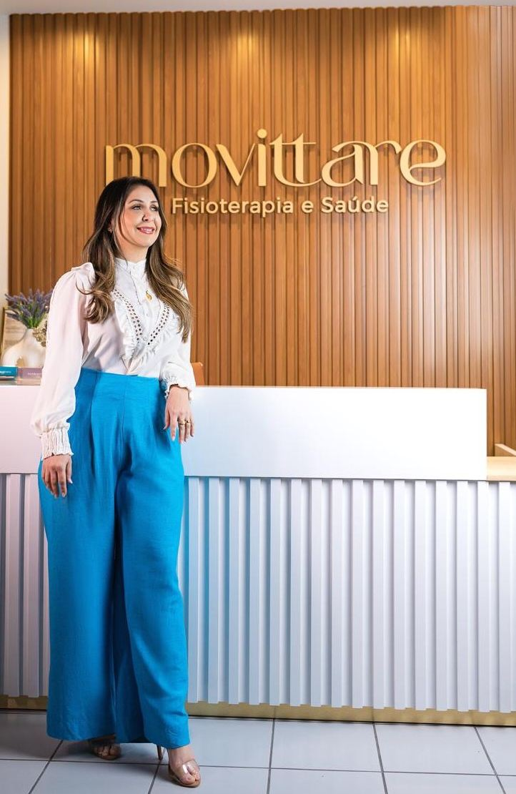
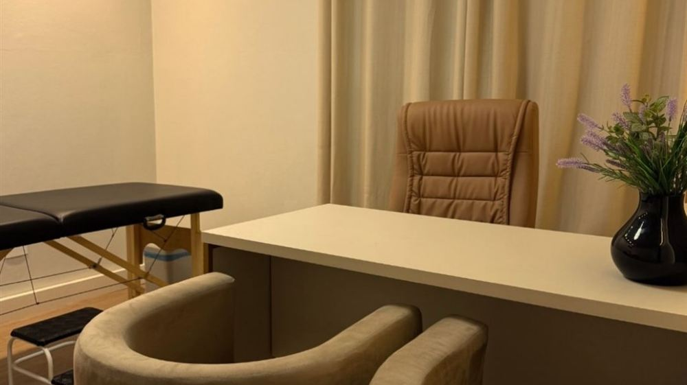
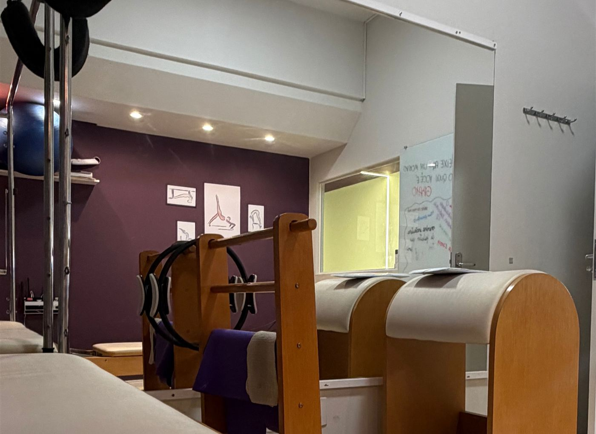
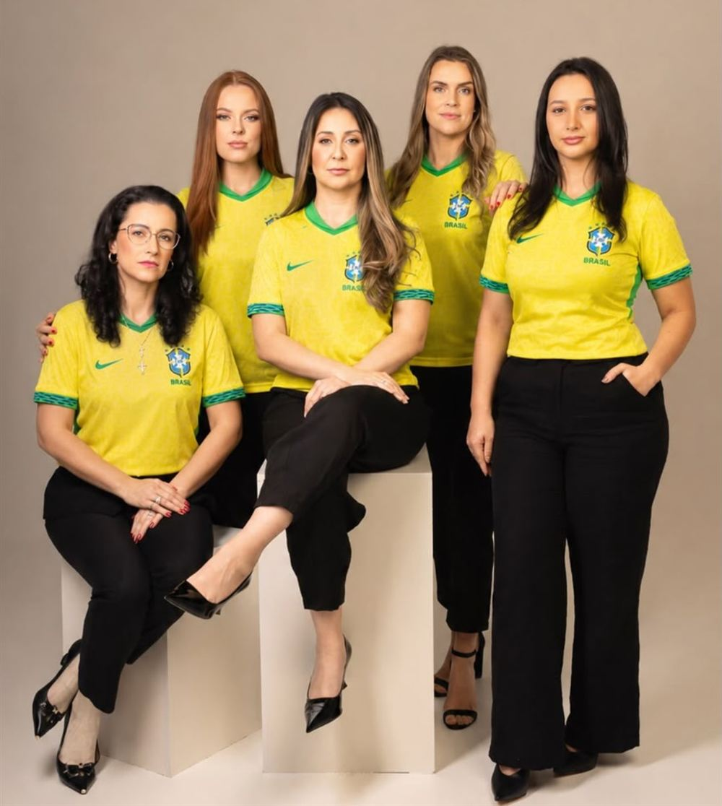

Araranguá, SC · há mais de 15 anos
Cuidado que transforma, movimento que liberta
Fisioterapia, Pilates e diferentes especialidades da saúde reunidas em um só lugar, com atendimento individual e acolhedor.

A clínica
Saúde, movimento e bem-estar caminham juntos
A Movittare nasceu há 15 anos com um propósito: cuidar das pessoas de forma completa, respeitando suas histórias, necessidades e individualidades.
Antes de fundar a clínica, a fisioterapeuta Morgana De Toni viveu mais de 10 anos dentro de um hospital. Dessa experiência veio a forma de cuidar que guia a equipe até hoje.
“Foi ali que aprendi que cuidar vai muito além da técnica.” Morgana De Toni, fundadora
- +15 anos de cuidado
- 10 profissionais
- 1 só lugar
Tratamentos e especialidades
Um cuidado pensado para cada momento da sua vida

Fisioterapia
- Fisioterapia pélvica
- Gestação, pós-parto, escapes de urina, recuperação após cirurgia de próstata e disfunções sexuais.
- Método LPF
- Diástase, postura, respiração e fortalecimento do abdômen.
- Traumato-ortopedia
- Dores na coluna e nas articulações, lesões e sobrecargas.
- Fisioterapia geriátrica
- Força, equilíbrio e independência para envelhecer bem.
- Osteopatia e terapia manual
- Investigação da causa da dor e liberação miofascial.

Pilates
- Pilates
- Força, mobilidade e consciência corporal, também para quem não sente dor.
- Pilates para gestantes
- Mais conforto, respiração e preparo do corpo durante a gestação.
- Pilates esportivo
- Preparo, estabilidade e desempenho para quem treina ou corre.
Saúde integrada
- Clínica médica
- Atendimento com médicos generalistas, da prevenção ao acompanhamento.
- Psicologia
- Escuta e acolhimento para cuidar da saúde mental.
- Nutrição
- Alimentação orientada para a sua rotina e seus objetivos.
- Estética
- Toxina botulínica, limpeza de pele, tratamento de manchas e vasinhos.
Equipe
Profissionais escolhidos pela competência e pela forma de acolher
Fale direto com quem vai cuidar de você ou peça orientação à recepção.

- Morgana De ToniFisioterapeuta, especialista em LPF
- Bruna WeingärtnerFisioterapeuta geriátrica, traumato-ortopedia e Pilates
- Letícia BigarellaFisioterapeuta pélvica e Pilates
- Luana GhizzoFisioterapeuta pélvica, disfunções sexuais
- Renan Dietrich LesnikFisioterapeuta, osteopatia
- Dr. Leandro AlmeidaMédico generalista
- Dra. DaianaMédica generalista
- Ana Paula GilPsicóloga
- Rosamaria AlmeidaNutricionista
- Iolanda LimaFarmacêutica esteta
Localização e horários
Venha nos visitar no Centro de Araranguá
Praça Hercílio Luz, 678, CentroAraranguá, SC · CEP 88900-001
| Segunda a sexta | 8h às 12h · 14h às 18h |
|---|---|
| Sábado e domingo | Fechado |
Dê o primeiro passo no seu cuidado
Nossa recepção ajuda você a encontrar o profissional certo.
Agendar pelo WhatsApp